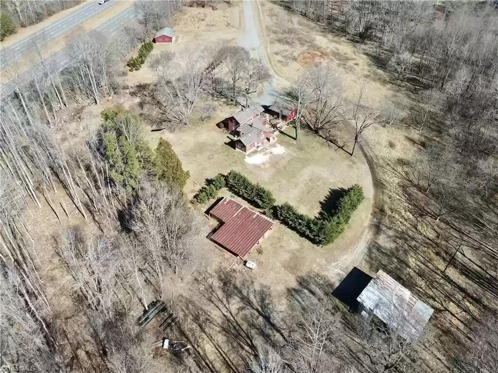

About Winnie Peng
Hello, I'm Winnie Peng, the green thumb behind this garden sanctuary. My journey into gardening began as a small seed of curiosity and has blossomed into a life-enriching adventure. This garden is not just a collection of plants; it's a tapestry of life, woven with the threads of nature's own design. My garden's story is one of transformation. From the first sprout breaking through the soil to the lush expanse you see today, each step has been a labor of love. I've faced challenges, from unpredictable weather to pesky pests, but the joy of nurturing life has always prevailed. To me, gardening is more than just planting and harvesting; it's about creating harmony with nature. It's a dance with the seasons, a respect for the cycles of growth and decay, and a commitment to sustainability. Join me in celebrating the beauty of growth and the serenity of nature. Winnie's Garden is not just my story; it's a shared chapter in the book of life, inviting all who wander through to find peace and inspiration among its leaves.
Contact Information
Email: winnie.chinaproduct@gmail.com
Location: 100 Sara Ln, Winston-Salem, NC
